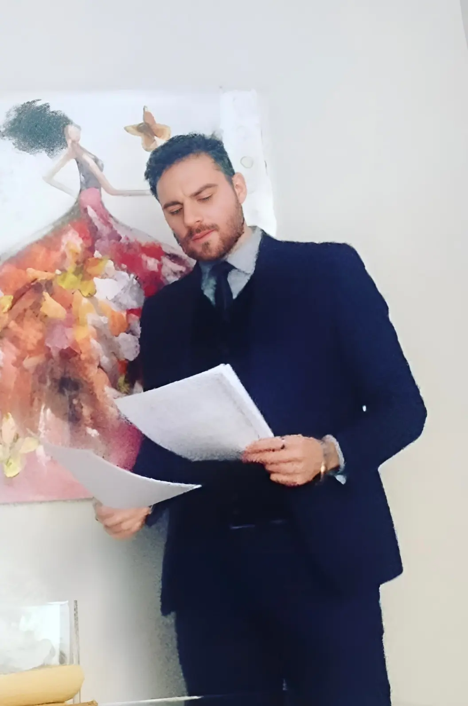
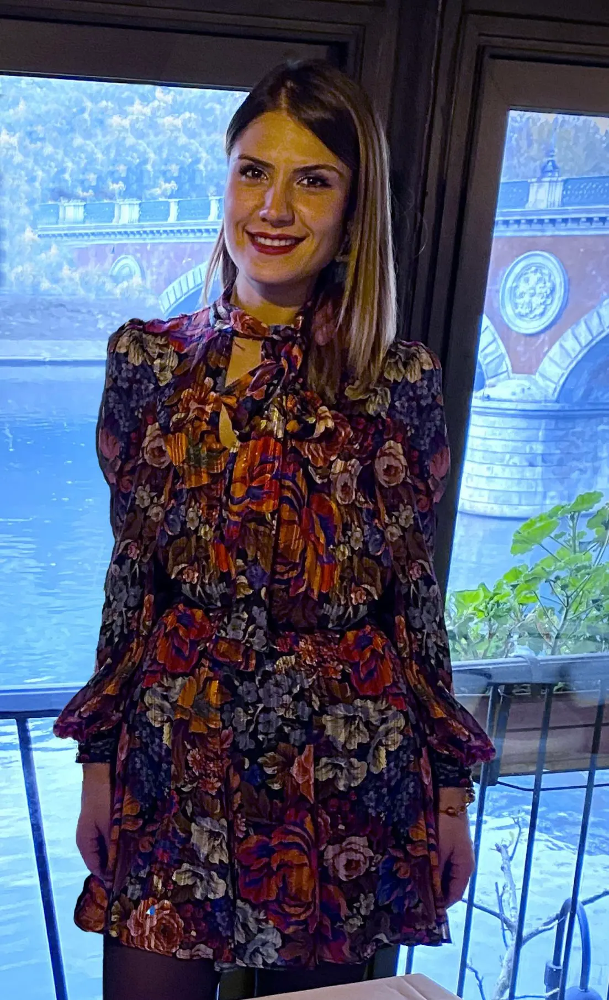

Avv. Vincenzo Russo
L’avvocato Vincenzo Russo è nato a Cariati (CS) il 15/02/1988.
Si è laureato in giurisprudenza all’Università degli Studi di Salerno nel 2013 con la tesi in diritto del lavoro e titolata “Le dimissioni del lavoratore”.
Esercita la libera professione legale a far data dal 2014 come praticante e dal 2017, conseguita
l’abilitazione, come avvocato.
Collabora con vari studi della provincia di Cosenza, di Salerno e di Bologna. È specializzato nel campo del diritto civile, risarcimento del danno, recupero crediti, diritto del lavoro, diritto di famiglia, diritto della scuola e concorsi pubblici, diritto commerciale, diritto tributario, diritto immobiliare, locazioni, diritto ammnistrativo, diritto bancario, diritto della proprietà intellettuale ed industriale, diritto alle successioni e volontaria giurisdizione.
Tutte materie nelle quali è in costante aggiornamento seguendo corsi di formazione e di approfondimento.

Dott.ssa Carmela Liguori
La Dottoressa Carmela Liguori è nata a Cariati (CS) il 18 maggio 1994.
Si è laureata all’università degli studi di Torino nel febbraio 2020 con una tesi di laurea in diritto del lavoro intitolata “Il rapporto di lavoro in agricoltura”.
Esercita la pratica forense dapprima in uno studio penale e, successivamente, presso uno studio
legale notarile. La Dottoressa Liguori si occupa di diritto penale carcerario, diritto dell’immigrazione, diritto del lavoro, recupero del credito, risarcimento danno, diritto immobiliare, diritto condominiale e diritto delle locazioni.